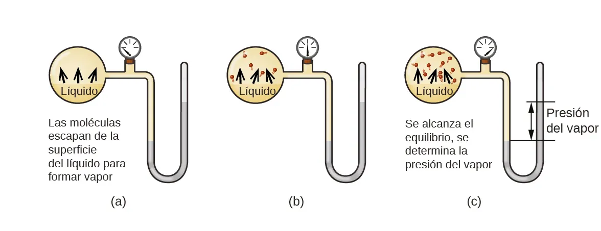
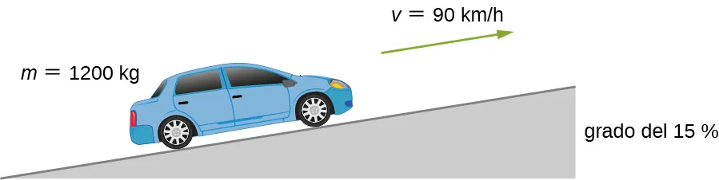

IES Valle del Alberche

📘 Enunciado
Partiendo del Primer Principio de la Termodinámica aplicado a un ciclo, de la definición de coeficiente de rendimiento de una máquina frigorífica, y del teorema de Carnot, demostrar que el coeficiente de rendimiento máximo de una máquina frigorífica reversible que opera entre dos focos térmicos a temperaturas \( T_c \) (foco caliente) y \( T_f \) (foco frío) viene dado por:
y que el de una bomba de calor reversible es:


🎯 Objetivo
Demostrar que una máquina frigorífica puede extraer más energía calorífica del foco frío que la energía mecánica que consume, lo que a veces se expresa coloquialmente como "rendimiento mayor que 100%". Esto no viola el Primer Principio porque el calor extraído del foco frío se suma al trabajo consumido para ceder calor al foco caliente. El resultado conecta con las aplicaciones prácticas de neveras, aires acondicionados y bombas de calor.


🔬 Procedimiento



✅ Resultado
Máquina frigorífica:
Bomba de calor:
Donde:
- \( T_c \): temperatura absoluta del foco caliente (K)
- \( T_f \): temperatura absoluta del foco frío (K)
- \( \varepsilon \): coeficiente de rendimiento (puede ser > 1)

🧪 DESMITIFICANDO el coeficiente de rendimiento frigorífico Púlsame
Una nevera doméstica extrae \( 1.5 \, \text{kJ} \) de calor del interior (foco frío) y consume \( 0.4 \, \text{kJ} \) de trabajo eléctrico en cada ciclo. Calcula su coeficiente de rendimiento frigorífico.
Paso 1: Aplicar \(\varepsilon_{\text{frigorífico}} = \frac{Q_f}{W}\).
Paso 2: \( \varepsilon = \frac{1.5}{0.4} = 3.75 \).
Resultado: El COP de la nevera es \( 3.75 \), es decir, por cada julio de electricidad extrae 3,75 J del interior.
Un frigorífico de Carnot opera entre \( T_f = 268 \, \text{K} \) (\( -5^\circ\text{C} \)) y \( T_c = 298 \, \text{K} \) (\( 25^\circ\text{C} \)). Calcula su coeficiente de rendimiento máximo.
Paso 1: Usar \(\varepsilon_{\text{frigorífico}} = \frac{T_f}{T_c - T_f}\).
Paso 2: \( \varepsilon = \frac{268}{298 - 268} = \frac{268}{30} \approx 8.93 \).
Resultado: El COP máximo teórico es \( 8.93 \).
Una bomba de calor consume \( 2.0 \, \text{kW} \) de potencia eléctrica y entrega \( 8.0 \, \text{kW} \) de calor a la vivienda (foco caliente). Calcula su coeficiente de rendimiento.
Paso 1: \(\varepsilon_{\text{bomba}} = \frac{Q_c}{W} = \frac{8.0}{2.0} = 4.0\).
Resultado: La bomba de calor tiene un COP de 4.0, es decir, por cada kW eléctrico aporta 4 kW térmicos a la casa.
Un aparato de aire acondicionado funciona como frigorífico con un COP de \( 5.0 \). Si se utiliza como bomba de calor para calefacción, ¿cuál será su COP?
Paso 1: Sabemos que \(\varepsilon_{\text{bomba}} = \varepsilon_{\text{frigorífico}} + 1\).
Paso 2: \( \varepsilon_{\text{bomba}} = 5.0 + 1 = 6.0 \).
Resultado: El COP como bomba de calor es \( 6.0 \).
Una bomba de calor geotérmica extrae calor del suelo a \( T_f = 278 \, \text{K} \) (\( 5^\circ\text{C} \)) y lo entrega a la vivienda a \( T_c = 293 \, \text{K} \) (\( 20^\circ\text{C} \)).
- a) Calcula su COP máximo (Carnot).
- b) Si su COP real es el 60% del máximo, ¿cuánto calor entrega por cada kWh eléctrico consumido?
a) \(\varepsilon_{\text{máx}} = \frac{T_c}{T_c - T_f} = \frac{293}{293 - 278} = \frac{293}{15} \approx 19.53\).
b) COP real = \( 0.60 \times 19.53 \approx 11.72 \).
Por cada kWh eléctrico (\( 1 \, \text{kWh} = 3.6 \, \text{MJ} \)), entrega \( 11.72 \times 3.6 \approx 42.2 \, \text{MJ} \) de calor.
Resultado: COP máximo \( 19.53 \), COP real \( 11.72 \), calor entregado \( 42.2 \, \text{MJ} \) por kWh.


Con un par de multiplicaciones y algo de práctica, esto es más fácil de lo que parece.
(Los detalles sobre lo que entra en las pruebas escritas se publicarán periódicamente en M.Teams).